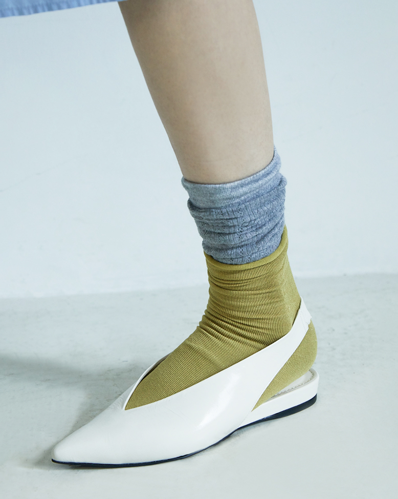
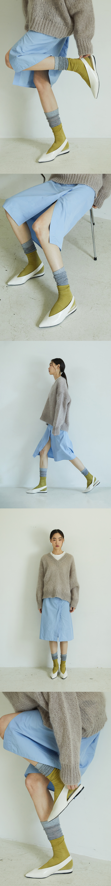
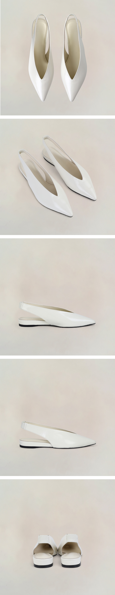
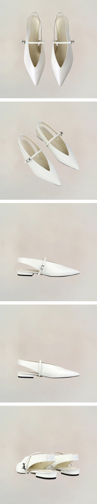
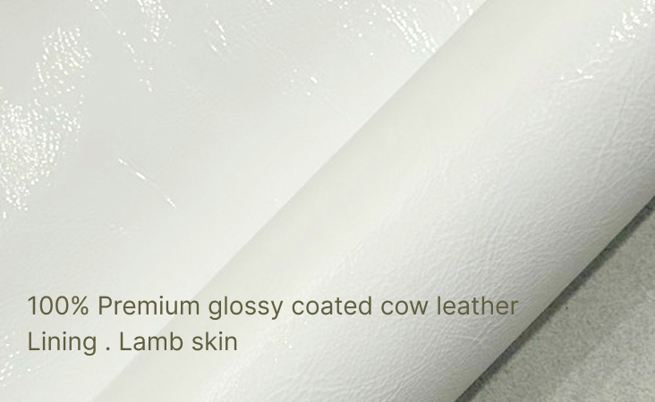

Attitude is not explained.
It is revealed.

편안함 속에서 흐트러지지 않는 태도.
정제된 실루엣으로 나다움을 완성합니다.

YATO의 조용하지만 분명한 자신감과 존재감
클래식한 디자인의 포인트토 슬링백 발렌타인 플랫슈즈
Slim Silhouette
슬림한 앞코라인과 깊게 파인 V라인 컷팅은 발과 다리 라인을 더욱 길고 슬림하게 보이게 합니다. 낮은 굽에서도 세련된 긴장감을 완성하며 하이힐을 신은 듯 당당한 실루엣을 선사합니다.
Semi glossy leather + Crinkle effect
광택 위에 흐르는 유연한 시선. 매끄러운 유광 코팅 가죽 (Polished Leather) 위에 자연스럽게 잡히는 잔주름 (Crinkle) 디테일은 시에나만의 독보적인 분위기를 만듭니다. 걸음마다 은은하게 빛을 반사하는 이 소재감은 발끝에서 일상의 활기를 더해줍니다.
Ultra-Flat Profile
지면에 닿는 굽의 존재감을 지우고 바닥에 낮게 밀착되는 슬림한 플랫 굽을 선택했습니다. 낮은 굽이 주는 편안함은 유지하면서도, 지면과 발 사이의 간극을 최소화한 설계는 모던한 애티튜드를 완성합니다.
DESIGNED FOR
“중요한 프리젠테이션이나 미팅을 앞두고, 스스로에게 확신과 단단한 에너지를 불어넣고 싶을 때.”
“낮은 굽의 편안함은 포기할 수 없지만, 무심해 보이지 않는 예리한 감각을 드러내고 싶은 날.”
“발끝까지 완벽하게 정돈된 실루엣으로 도심의 빌딩 숲을 당당하게 가로지르고 싶은 오후.”

이미지는 기기에 해상도에 따라 색상의 차이가 있을수 있습니다.
*별도 스트랩을 원하시는 경우 발렌타인 화이트옵션을 선택해주세요.
Option 01. VALENTINE PURE (WHITE)
슬림한 라인의 포인티드 토와 브이컷의 매칭이 돋보이는 모던하고 세련된 분위기의 제품입니다. 깨끗하고 시원한 컬러감을 선사하는 화이트는 깔끔한 무드와 함께 시각적인 청량감을 주어 다양한 룩에 이질감 없이 세련되게 매치하기 좋은 컬러입니다.

Option 02. VALENTINE ORIGINAL + STRAP (+ 40,000 won)
꾸준히 베스트 셀러, 발렌타인 클래식 블랙의 화이트 버전 디자인입니다. 발등에 가느다란 스트랩 디테일을 추가해 고정력과 스타일의 완성도를 더해 주어 색다른 무드로 연출할 수 있습니다. 1.5cm의 낮은 굽의 로우 플랫이지만 흐트러짐 없는 실루엣의 제품입니다.

좋은 실루엣은 좋은 소재에서 시작됩니다.
YATO는 겉감과 안감 모두 엄선된 천연가죽을 사용하며, 소재의 질감과 형태, 착화감까지 고려해 신중하게 선별합니다.

아름다운 형태는 미세한 차이에서 만들어집니다.
YATO는 발의 움직임과 아름다운 비율을 함께 고려하며, 0.1mm의 차이까지 다듬은 시그니처 라스트를 직접 개발합니다.

완성도는 장인의 손끝에서 시작됩니다.
YATO는 국내 생산을 원칙으로, 성수동 아틀리에의 숙련된 장인이 한 켤레씩 정교한 수제 공정으로 완성합니다. 보이지 않는 디테일까지 고객의 발 형태를 반영한 1:1 커스텀 핏 서비스를 제공합니다.

YATO GUARANTEE & CARE SERVICE
오랫동안 아름다운 실루엣을 유지하기 위한 케어 서비스를 제공합니다.
One Year Warranty
구매일로부터 1년 무상 A/S 지원
Silhouette Refresh
착화로 변형된 실루엣을 되살리는 1회 무료 실루엣 복원 서비스
| EU | 35 | 35.5 | 36 | 36.5 | 37 | 37.5 | 38 | 38.5 | 39 | 39.5 | 40 |
|---|---|---|---|---|---|---|---|---|---|---|---|
| KR | 220 | 225 | 230 | 235 | 240 | 245 | 250 | 255 | 260 | 265 | 270 |
- 핏감 있는 정사이즈로 제작되었습니다.
- 사이즈가 애매한 경우 한 사이즈 크게 선택해 주세요.
ex) 235~240 → 240추천 - 양말과 함께 착용하실 경우 한 사이즈 크게 추천드립니다.
- 정사이즈 외에 특별한 요청이 있는 경우 1:1 커스텀 핏 케어로 제작해드립니다. 원하는 옵션을 배송 커멘트 칸에 기입해주세요.
(제작 기간: 영업일 기준 7~14일, 교환 1회가능, 환불 불가)
1:1 YATO Atelier Custom-Fit Care
- - 발볼 넓힘 / 발볼 많이 넓힘
- - 발등 높임
- - 양발 미세 사이즈 차이 보정
(ex. Left 235 / Right 240) - - 높은 아치 보정 쿠션 추가
(Special Option +30,000원, 별도안내예정)
INQUIRY
KAKAO CHANNEL+@yatomode 지금 문의하러가기상품 안내
- 일반 주문시 영업일기준으로 주문접수이후 배송 까지 2-14일 소요됨을 미리 안내드립니다. 당일 주문량이 많아 배송이 지연되는 경우 별도 안내드립니다. 사이즈 교환은 1회 가능합니다.
- 35(220mm) ~ 35.5(225mm), 39(260mm) ~ 40(270mm) 특별사이즈 주문과 일대일 커스텀 핏 주문 제작은 주문일로부터 영업일기준 7-14일 소요되며, 교환, 환불이 불가합니다.
배송 안내
- 배송 지역 | 대한민국 전지역
- 배송비 | 무료
- 배송기간 | 주말 공휴일 제외 2~14일 (모든 배송은 택배사 사정으로 지연될 수 있습니다.)
교환 및 반품 안내
- 고객 변심으로 인한 교환/반품은 상품 수령 후 7일 이내 가능합니다.
- 반품 및 교환 문의는 자사몰 혹은 카카오채널 @yatomode로 가능합니다.
- 고객 귀책 사유로 인한 반품의 경우 왕복 택배비 7,000원은 고객님 부담입니다.
- 반품 접수가 완료되면 구매금액에서 택배비 차감하여 환불진행합니다.
- 환불기한은 카드사 정책에 따르며, 무통장 입금은 영업일 기준 3일 이내 입금드립니다.
- 반품접수 기한이 지난 경우, 제품 및 패키지 훼손, 사용 흔적이 있는 제품은 교환/반품이 불가합니다.
- 반품접수는 반품제품이 다시 판매가능한 상태의 제품인경우에만 환불 가능한점 안내드립니다.
사이즈 교환 안내
- 제품 교환은 신규 주문 접수가 들어가므로 주문일로 부터 영업일기준 7-14일 소요됩니다.
제품 하자로 인한 교환 및 반품 안내
- 제품 하자 접수 건은 본사 수거 후 전문 검수팀의 절차를 거치게 됩니다.
- 검수 결과 제품 하자로 최종 판정될 경우, 교환 및 반품에 따른 왕복 택배비는 본사에서 전액 부담합니다.
천연가죽 및 수제화 특성에 따른 유의사항 (불량 사유 제외)
- 아래 항목은 천연가죽 및 핸드메이드 수공 제작 과정에서 발생하는 자연스러운 현상으로, 제품 자체의 하자에 해당하지 않으니 구매 및 교환/반품 신청 시 참고해 주시기 바랍니다.
- 천연가죽 소재 특성
YATO의 모든 슈즈는 외피와 내피에 모두 100% 천연가죽(양가죽 등)을 사용합니다.
천연가죽의 특성상 가죽 표면의 힘줄, 미세한 스크래치, 부위별 결 및 톤 차이가 존재할 수 있습니다.
천연 염료 착색 특성상 땀이나 습기, 마찰에 의해 착색 및 이염이 발생할 수 있습니다. - 수공 제작(Handmade) 특성
수작업으로 제작되는 특성상 작업 과정 중 발생하는 미세한 마감 차이나 미세 스크래치가 있을 수 있습니다.
모든 제품은 본사의 엄격한 품질 가이드라인에 따라 전수 검수를 마친 정품만 출고됩니다.